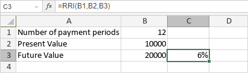

RRI funkcija
RRI funkcija je jedna od finansijskih funkcija. Koristi se za izračunavanje ekvivalentne kamatne stope za rast investicije.
Sintaksa
RRI(nper, pv, fv)
RRI funkcija ima sledeće argumente:
| Argument | Opis |
|---|---|
| nper | Broj perioda investicije. |
| pv | Trenutna vrednost investicije. |
| fv | Buduća vrednost investicije. |
Napomene
Kako primeniti RRI funkciju.
Primeri
Slika ispod prikazuje rezultat koji vraća RRI funkcija.
